KSB065 家控板
Raspberry Pi Pico /Pico W 使用說明
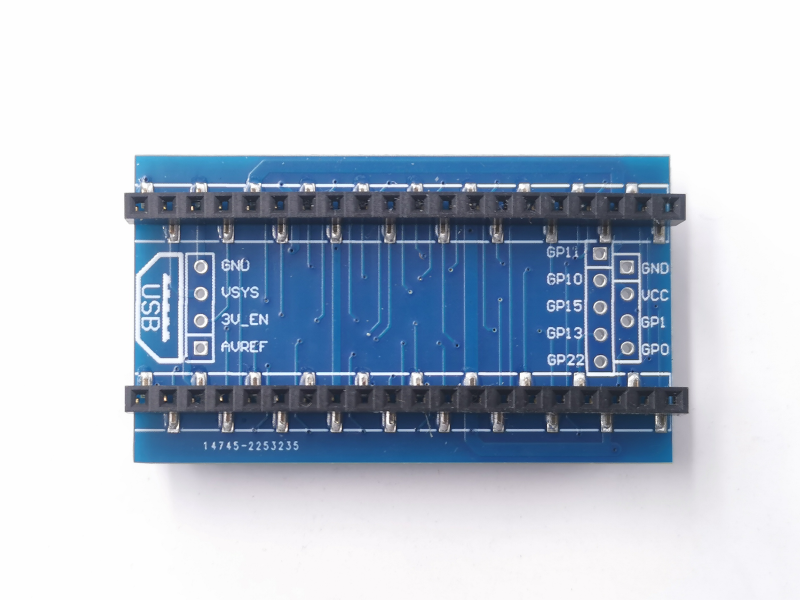
取出你的Pico to KSB065 轉板
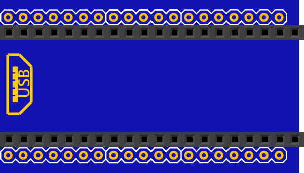
插入到下面的位址，靠齊左邊PCB
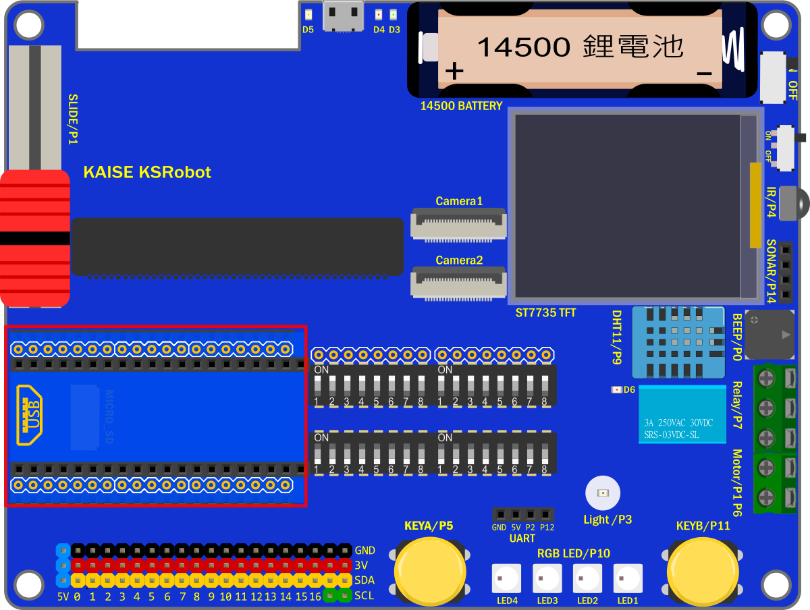
再插入Pico 主板
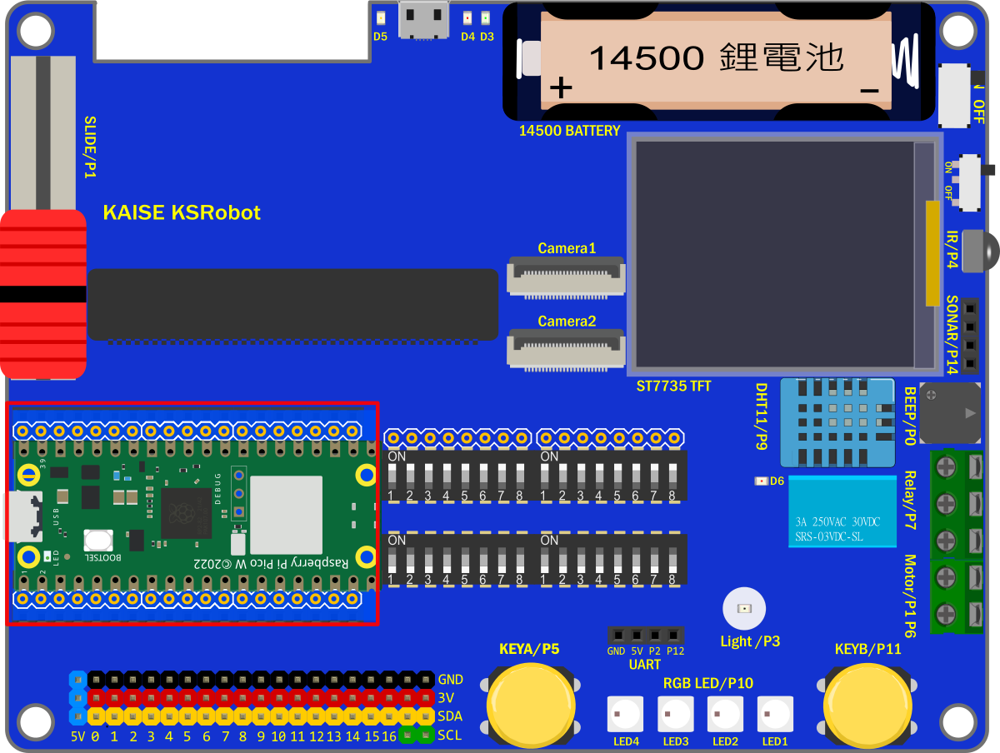
排針腳位 對應表格
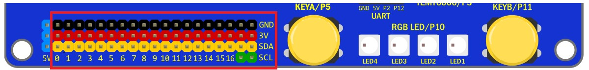
PS：全部IO 都已經被板子上的感測器使用完畢，要用排針腳位另接模組，需用指撥開關關掉相對應的感測器IO
| PCB標示 | micro:bit | ESP32 | PICO | 備註 |
|---|---|---|---|---|
| 0 | P0 | IO26 | GP3 | 蜂鳴器 |
| 1 | P1 | IO33 | GP27 | 滑桿 或 馬達控制 |
| 2 | P2 | IO32 | GP28 | UART 插座Rx |
| 3 | P3 | IO35 | GP12 | 紅外接收元件 |
| 4 | P4 | IO4 | GP26 | 光度感測器 或 SD(CS) |
| 5 | P5 | IO14 | GP2 | 按鈕A |
| 6 | P6 | IO16 | GP5 | 馬達控制 |
| 7 | P7 | IO17 | GP14 | 繼電器 |
| 8 | P8 | IO27 | GP8 | ST7735彩屏(DC) |
| 9 | P9 | IO13 | GP17 | DHT11 |
| 10 | P10 | IO2 | GP16 | 全彩燈 |
| 11 | P11 | IO25 | GP19 | 按鈕B用 |
| 12 | P12 | IO15 | GP18 | UART 插座Tx |
| 13 | P13 | IO18 | GP6 | ST7735彩屏(SCK) 和 SD(SCK) |
| 14 | P14 | IO19 | GP4 | SD(MISO) 或 Sonar(超音波插座) |
| 15 | P15 | IO23 | GP7 | ST7735彩屏(MOSI) 和 SD(MOSI) |
| 16 | P16 | IO5 | GP9 | ST7735彩屏(CS) |
| SCL | P19 | IO22 | GP21 | IIC用 |
| SDA | P20 | IO21 | GP20 | IIC用 |
編譯環境初次設定
安裝Pico核心檔案
啟動 Arduino IDE 並點擊下拉功能表「File」>「Preferences」。
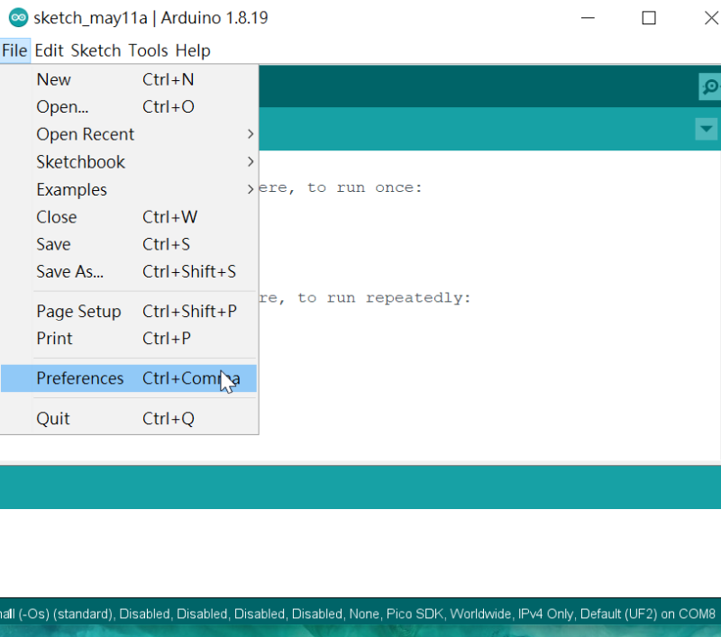
Additional Boards Manager URLs：
輸入 https://github.com/earlephilhower/arduino-pico/releases/download/global/package_rp2040_index.json
然後點擊「OK」鈕。
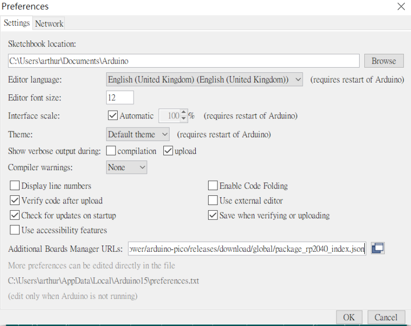
點擊下拉功能表「Tools」>「Board」> 「Board Manager...」
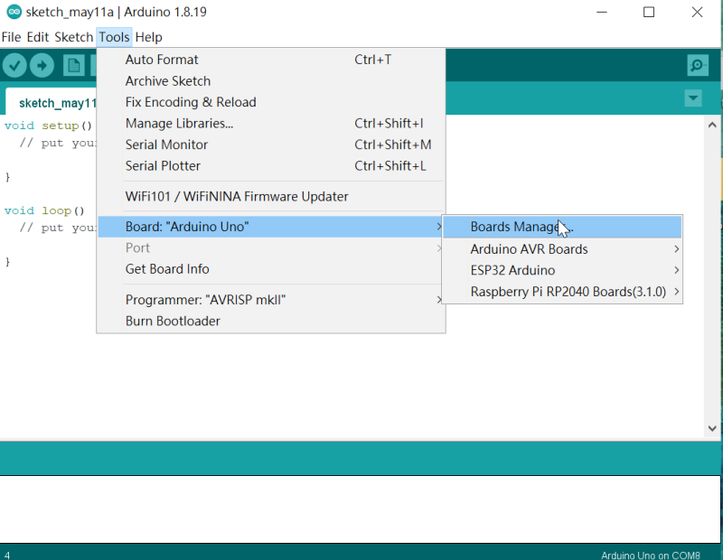
在 Type 右方空白欄位輸入「pico」，再選 Raspberry Pi Pico/RP204
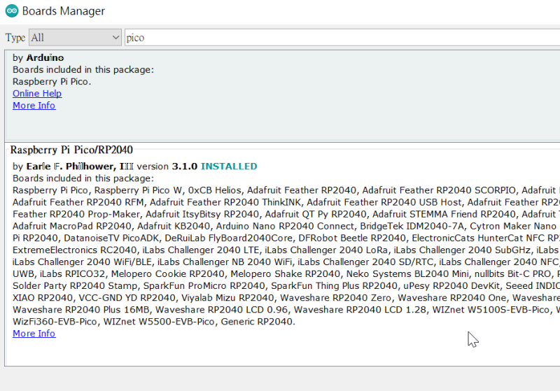
點擊「Install」，然後等待幾分鐘下載完畢後點擊右下角落的「Close」鈕關閉視窗。
選擇 開發板和連接埠
點擊下拉功能表「Tools」>「Board」，
選擇「Raspberry Pi RP2040 Boards」>「Raspberry Pi PICO W」，
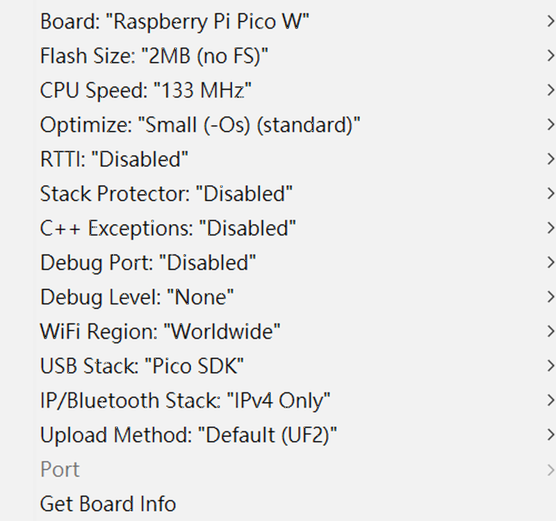
基本範例
KSB065 配備很多感測器，所以有些感測器的使用IO腳位會跟其它感測器重複，因此要使用指撥開關來選定要使用的感測器且要關掉腳位重覆的感測器。
再練習基礎範例時，請先把 攝像鏡頭和SD 卡拿掉，
指撥1 和 指撥2 的開關全部都撥到ON
指撥3 和 指撥4 的開關全部都撥到ON(使用Raspberry Pi Pico 時，會用到這2個指撥)
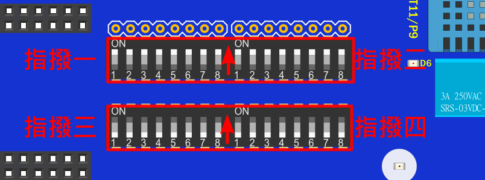
指撥開關腳位 對應表格
範例
把KSB065 需要用的Lib （KSB065_PICO_ARDUINO_DEMO/Lib）放置到Arduino libraries 的目錄
PS 範例下載：選範例後再另存連結
範例1 蜂鳴器範例
1.蜂鳴器使用GP3
使用時，指撥1的開關1要打開
指撥3 和 指撥4 的開關全部都撥到ON
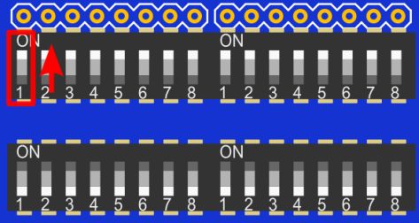
2.執行範例 EX01_Beep.ino
3.編譯下載完成，執行時蜂鳴器會有聲音
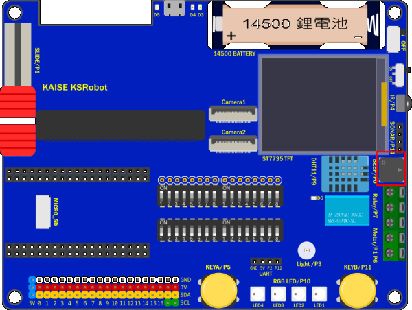
範例2 按鈕範例
1.
按扭A使用GP2
按扭B使用GP19
按鈕腳位跟指撥設定沒有關係
2.執行範例 EX02_Button.ino
3.編譯下載完成，打開序列埠監看視窗， 按按鈕時視窗會出現該按鈕
範例3 滑桿範例
1.滑桿使用GP27
使用時，指撥1的開關2要打開
指撥3 和 指撥4 的開關全部都撥到ON
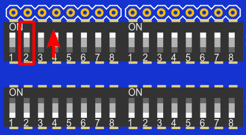
PS
Slide(滑桿) 和 Motor(馬達控制) 的 IO腳位GP27重複，功能2擇1
2.執行範例 EX03_Slide.ino
3.編譯下載完成，打開序列埠監看視窗， 移動 滑桿 時視窗會出現數值
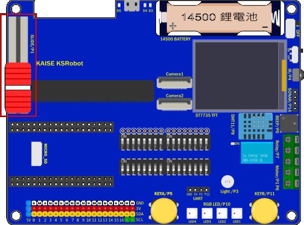
範例4 繼電器範例
1.繼電器使用GP14
使用時，指撥2的開關4要打開
指撥3 和 指撥4 的開關全部都撥到ON
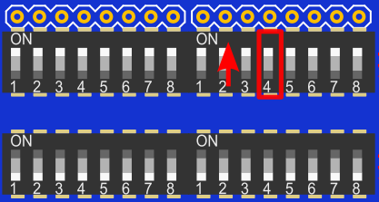
PS
Relay(繼電器) 和 PSRAM 的 IO腳位GP14重複，功能2擇1
2.執行範例 EX04_Relay.ino
3.編譯下載完成，執行時會聽到繼電器切換開關的搭搭聲
範例5 亮度範例
1.亮度感測器使用GP26
使用時，指撥2的開關1要打開，SD卡要拿掉 或者 指撥2的開關8要關掉
指撥3 和 指撥4 的開關全部都撥到ON
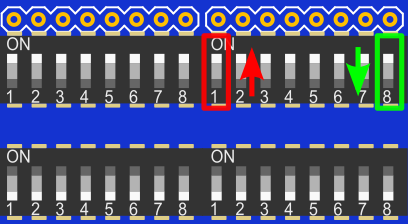
PS
Light(光度) 和 SD 的 IO腳位GP26重複，功能2擇1
2.執行範例 EX05_Light.ino
3.編譯下載完成，打開序列埠監看視窗， 用手往亮度感測器移動時視窗會出現數值變化
範例6 DHT11溫濕度範例
1.DHT11使用GP17
使用時，指撥2的開關5要打開
指撥3 和 指撥4 的開關全部都撥到ON
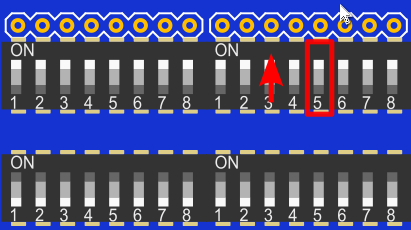
2.執行範例 EX06_DHT11.ino
3.編譯下載完成，打開序列埠監看視窗， 視窗會出現溫度和濕度變化
範例7 全彩燈(WS2812B)範例
1.全彩燈(WS2812B)使用GP16
使用時，指撥2的開關6要打開
指撥3 和 指撥4 的開關全部都撥到ON
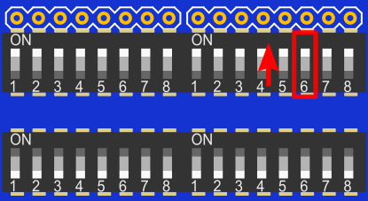
2.執行範例 EX07_RGB_LED.ino
3.編譯下載完成，執行時4顆全彩燈(WS2812B)會依序亮 紅色 綠色 藍色
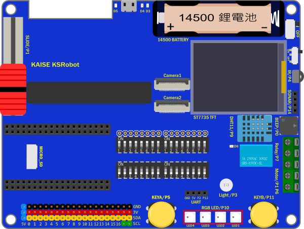
範例8 紅外遙控範例
1.紅外遙控接收元件使用GP12
使用時，指撥2的開關3要打開
指撥3 和 指撥4 的開關全部都撥到ON
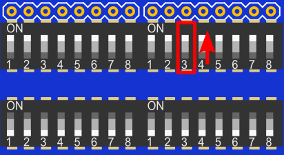
2.執行範例 EX08_IR.ino
3.編譯下載完成，打開序列埠監看視窗， 按KSRobot 21鍵 紅外遙控器 的任意鍵，再視窗會出現該鍵的數值，使用一般遙控器也可以自行修改程式中的編碼值。
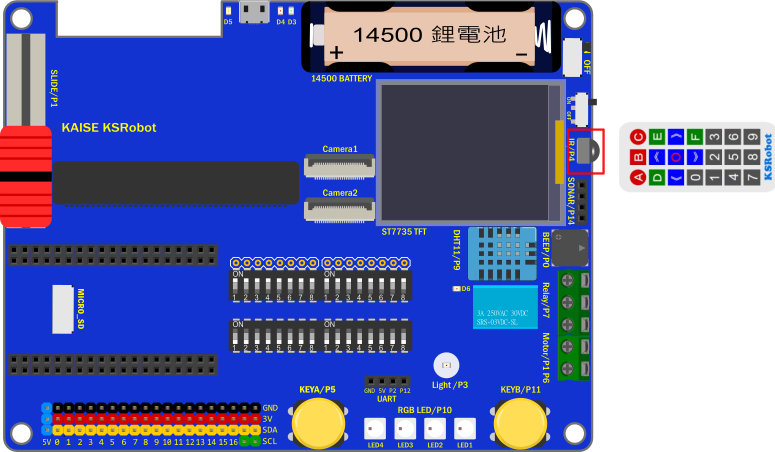
範例9 直流馬達控制範例
1.馬達控制
L9110S_1A 使用GP5
L9110S_1B 使用GP27
使用時，指撥1的開關2 要關掉，
指撥2的開關2 要打開，指撥2的開關7 要打開
指撥3 和 指撥4 的開關全部都撥到ON
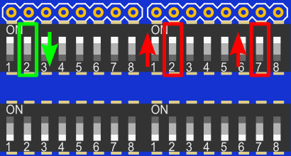
PS
Motor(馬達控制) 和 Slide(滑桿) 的 IO腳位GP27重複，功能2擇1，所以使用馬達控制時滑桿要關掉
Motor(馬達控制) 和 PSRAM 的 IO腳位GP5重複，功能2擇1
2.執行範例 EX09_Motor.ino
3.編譯下載完成，執行時馬達會正轉快轉，正轉慢轉，反轉快轉，反轉慢轉
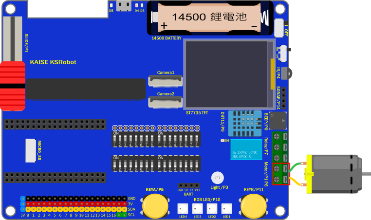
範例10 超音波範例
1.超音波使用GP4
使用時SD卡要拿掉，超音波腳位跟指撥設定沒有關係
PS
Sonar(超音波插座) 和 SD 的 IO腳位 GP4 重複，功能2擇1
2.執行範例 EX10_Sonar.ino
3.編譯下載完成，打開序列埠監看視窗， 視窗會出現超音波的偵測距離
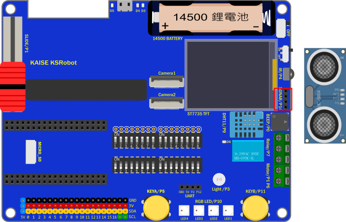
範例11 SD卡範例
1.SD卡使用GP4(MISO)，GP7(MOSI)，GP6(SCK)，GP26(CS)
使用時，超音波要拿掉，
指撥1的開關6要打開，指撥1的開關7要打開
指撥2的開關1要關掉，指撥2的開關8要打開
指撥3 和 指撥4 的開關全部都撥到ON
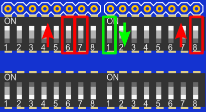
PS
SD 和 Light(光度) 和 的 IO腳位 GP26 重複，功能2擇1
SD 和 Sonar(超音波插座) 的 IO腳位 GP4 重複，功能2擇1
2.執行範例 EX11_SDCard.ino
3.編譯下載完成，打開序列埠監看視窗， 視窗會出現SD卡檔案目錄等資訊。
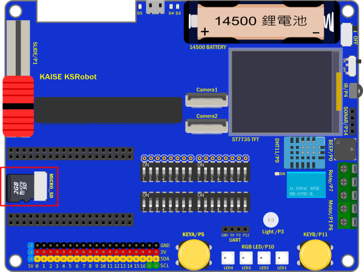
範例12 彩色螢幕範例
1.彩色螢幕使用GP6(SCK)，GP7(MOSI)，GP8(DC)，GP9(CS)
使用時，
指撥1的開關5要打開，指撥1的開關6要打開
指撥1的開關7要打開，指撥1的開關8要打開
指撥3 和 指撥4 的開關全部都撥到ON
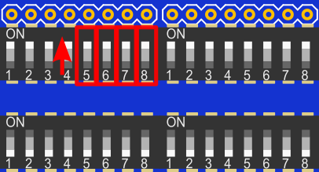
2.執行範例 EX12_TFTLCD.ino
3.編譯下載完成，要記得打開TFT LCD的背光電源，執行時TFT LCD會有顯示儀表板的圖示
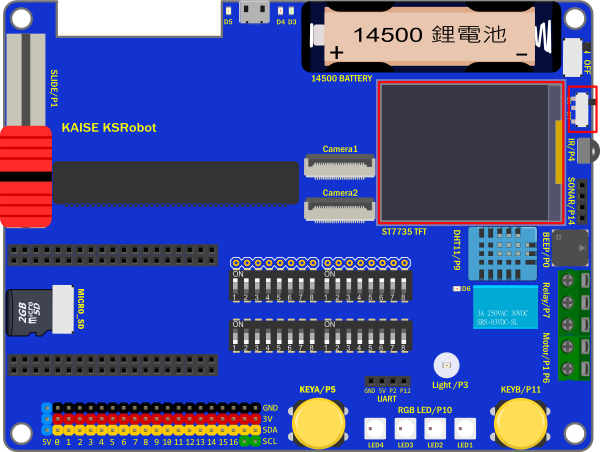